Sama tallennettu 1000 osan kolmikerroksinen talo, alkuperäisillä asseteilla ja erillisellä primitiiviesityksellä. Kamera kiertää eri korkeuksilta. Ensin kolme sytytyskohtaa, sitten tahallinen lähes kaikkien osien yhtäaikainen sytytys.
Vakaa 60 FPS ei vielä täyty tässä suurpalokokeessa. 120 FPS:ää ei ole validoitu. Pääsäikeen renderöinti, esitysten päivitykset ja rakennemuutosten käyttöönotto vaativat edelleen työtä.
Savun huone-/aukkokyselyt ovat nyt oikeassa workerissa, samoin tuenta ja renderigeometrian valmistelu. Yhteinen aktiivisten töiden raja riippuu selaimen ilmoittamista loogisista suorittimista; työmäärä ja arvioitu peilimuisti rajaavat sitä edelleen. Palo ja huonesavun massansiirto ovat 2 Hz:n pääsäietöitä, eivät erillisiä workereita. Muuttumaton tuettu rakenne ei tarvitse jatkuvaa tukilaskentaa. Sortuman tarkistukset ja poistot etenevät jonossa, eivät yhtenä rekursiivisena ketjuna.
Alitusaika: 60 FPS / 3 % toleranssi (17,182 ms). Tiukat 60/120 rajat, 0,1 % low ja kaikki ruutuajat raakadatassa. Ei keski-FPS-hyväksyntää.
| Koe / vaihe | Pahin ruutu | Min FPS | 1 % low | Alitusaika | Pisin jakso | Pystyssä / rauniot |
|---|---|---|---|---|---|---|
| native · baseline | 50.1 ms | 20.0 | 26.2 | 48.4 % | 66.7 ms | 1000 / 0 |
| native · three-seed-spread | 66.7 ms | 15.0 | 18.3 | 77.8 % | 899.9 ms | 1000 / 0 |
| native · mass-ignition-stress | 133.4 ms | 7.5 | 7.5 | 100.0 % | 19999.3 ms | 997 / 0 |
| native · damage | 150.0 ms | 6.7 | 7.2 | 100.0 % | 24915.6 ms | 858 / 59 |
| native · collapse | 166.7 ms | 6.0 | 6.6 | 86.8 % | 25582.4 ms | 0 / 761 |
| native · rubble | 233.3 ms | 4.3 | 4.5 | 77.4 % | 349.9 ms | 0 / 761 |
| primitive · baseline | 16.8 ms | 59.5 | 59.5 | 0.0 % | 0.0 ms | 1000 / 0 |
| primitive · three-seed-spread | 50.0 ms | 20.0 | 29.1 | 6.5 % | 83.3 ms | 1000 / 0 |
| primitive · mass-ignition-stress | 150.0 ms | 6.7 | 7.1 | 100.0 % | 19949.3 ms | 997 / 0 |
| primitive · damage | 166.6 ms | 6.0 | 6.2 | 100.0 % | 24982.4 ms | 838 / 102 |
| primitive · collapse | 250.0 ms | 4.0 | 4.9 | 65.2 % | 11782.9 ms | 0 / 755 |
| primitive · rubble | 366.7 ms | 2.7 | 2.8 | 58.6 % | 433.3 ms | 0 / 755 |
M1 Pro, Chrome headless, 1440×900, noin 60 Hz, kehityspalvelin. Sää elää. Ei RTX-mittaus eikä jäädytetty kausaalinen A/B. Käynnistys, tallenteen lataus, sytytyskäsky ja screenshotit eivät kuulu ruutuaikaikkunoihin. Eläimet, rakennusten pintalumi ja lämpökentät pois; muu lumi/sää sekä tuli, savu, tuenta ja sortuminen päällä.
Eristetty oikeiden workerien koe, ei pelin FPS-mittaus: samat 512 kattoreittikyselyä ja 121 kattopalaa. Kylmä erä sisältää käynnistyksen. Neljä lämmintä erää uusilla revisioilla; ei välimuistin oikaisua.
| Raja / käytössä | Kylmä erä | Lämpimät erät |
|---|---|---|
| 1 / 1 | 216.8 ms | 155.7 / 158.1 / 157.4 / 156.6 ms |
| 8 / 8 | 196.3 ms | 20.1 / 20.1 / 19.8 / 19.3 ms |
Yhteenveto · Worker-koe · native: kaikki ruutuajat · primitive: kaikki ruutuajat · Peli
1000 osaa pystyssä, 0 palaa, 0 rauniota. Simulaatioaika 26.9 s. Vaihenimi ei yksin tarkoita, että talo olisi kokonaan romahtanut.
Savutyöntekijöitä 0, virheitä 0, odottavia kyselyitä 0. Sortumajono 0.
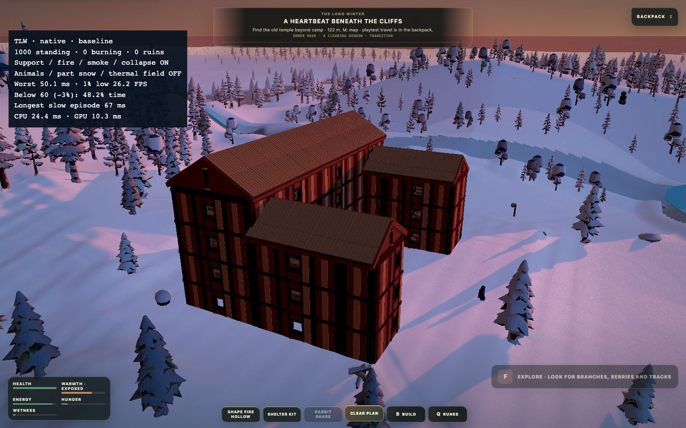
1000 osaa pystyssä, 3 palaa, 0 rauniota. Simulaatioaika 57.2 s. Vaihenimi ei yksin tarkoita, että talo olisi kokonaan romahtanut.
Savutyöntekijöitä 7, virheitä 0, odottavia kyselyitä 6. Sortumajono 0.
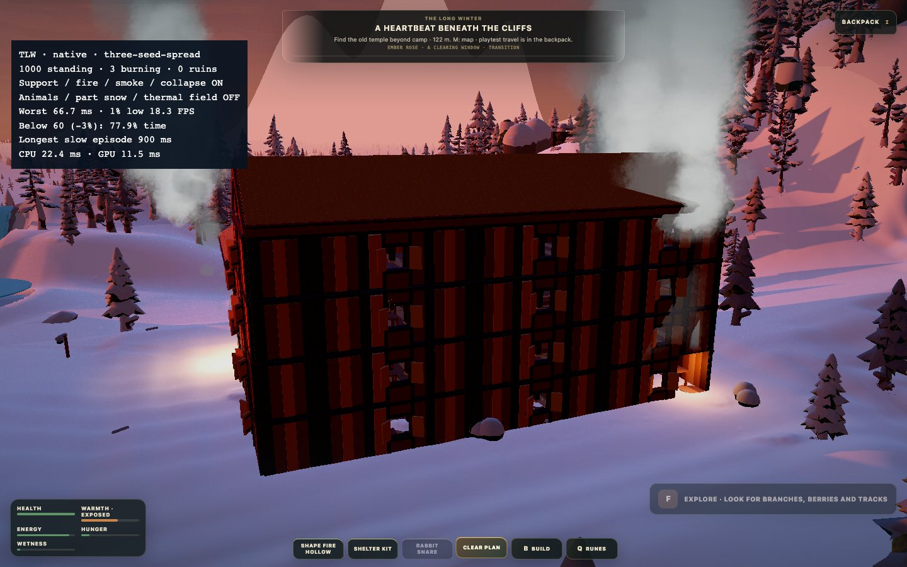
997 osaa pystyssä, 997 palaa, 0 rauniota. Simulaatioaika 77.2 s. Vaihenimi ei yksin tarkoita, että talo olisi kokonaan romahtanut.
Savutyöntekijöitä 8, virheitä 0, odottavia kyselyitä 3833. Sortumajono 0.
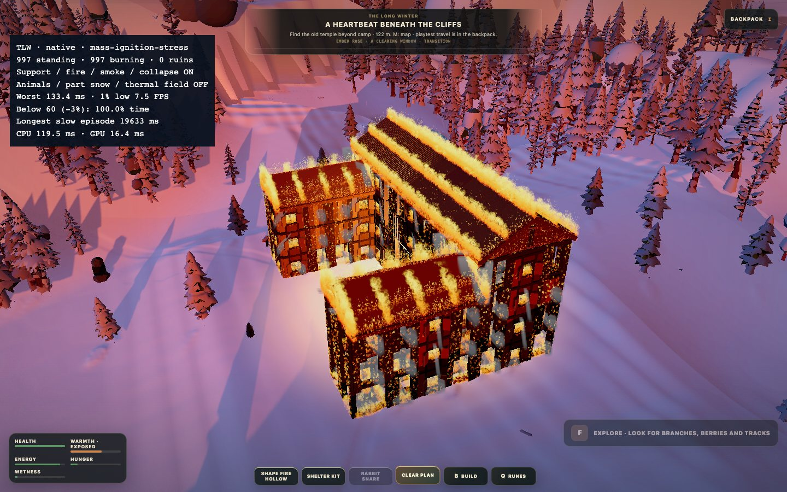
858 osaa pystyssä, 858 palaa, 59 rauniota. Simulaatioaika 101.6 s. Vaihenimi ei yksin tarkoita, että talo olisi kokonaan romahtanut.
Savutyöntekijöitä 8, virheitä 0, odottavia kyselyitä 3228. Sortumajono 109.
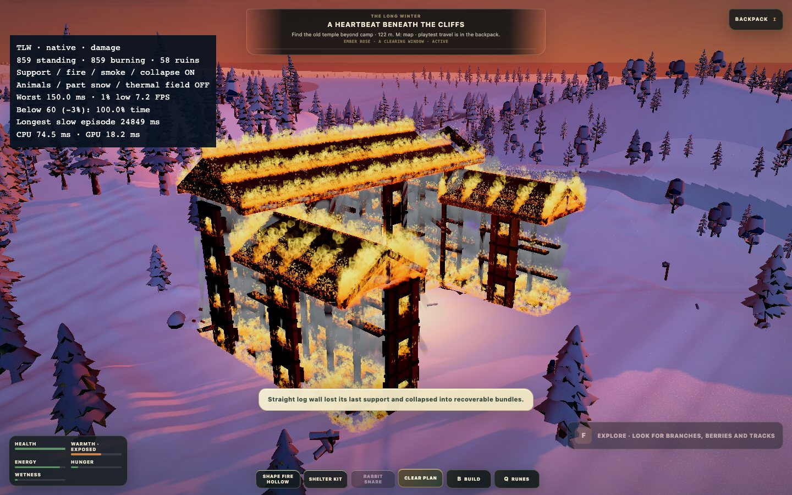
0 osaa pystyssä, 0 palaa, 761 rauniota. Simulaatioaika 155.9 s. Vaihenimi ei yksin tarkoita, että talo olisi kokonaan romahtanut.
Savutyöntekijöitä 8, virheitä 0, odottavia kyselyitä 1. Sortumajono 0.
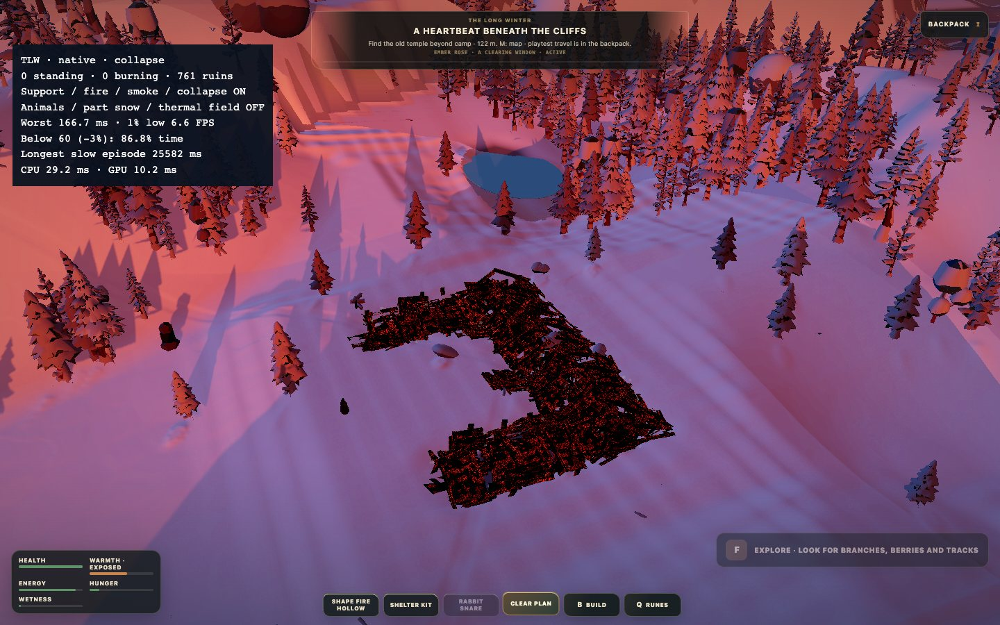
0 osaa pystyssä, 0 palaa, 761 rauniota. Simulaatioaika 169.0 s. Vaihenimi ei yksin tarkoita, että talo olisi kokonaan romahtanut.
Savutyöntekijöitä 8, virheitä 0, odottavia kyselyitä 5. Sortumajono 0.
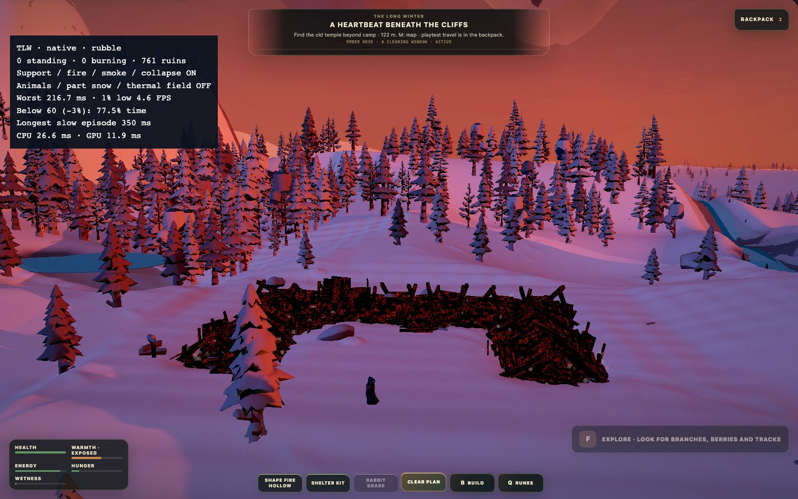
1000 osaa pystyssä, 0 palaa, 0 rauniota. Simulaatioaika 27.0 s. Vaihenimi ei yksin tarkoita, että talo olisi kokonaan romahtanut.
Savutyöntekijöitä 0, virheitä 0, odottavia kyselyitä 0. Sortumajono 0.
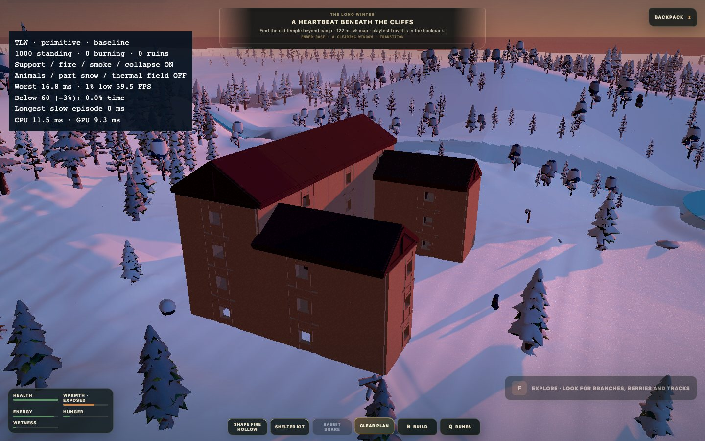
1000 osaa pystyssä, 3 palaa, 0 rauniota. Simulaatioaika 57.2 s. Vaihenimi ei yksin tarkoita, että talo olisi kokonaan romahtanut.
Savutyöntekijöitä 5, virheitä 0, odottavia kyselyitä 22. Sortumajono 0.
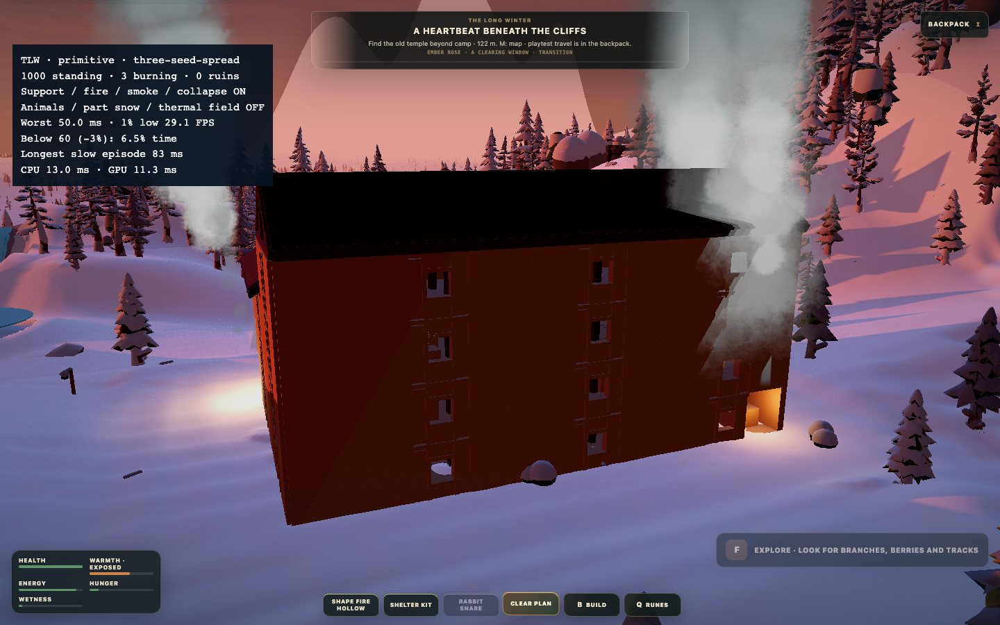
997 osaa pystyssä, 997 palaa, 0 rauniota. Simulaatioaika 77.2 s. Vaihenimi ei yksin tarkoita, että talo olisi kokonaan romahtanut.
Savutyöntekijöitä 8, virheitä 0, odottavia kyselyitä 3881. Sortumajono 0.
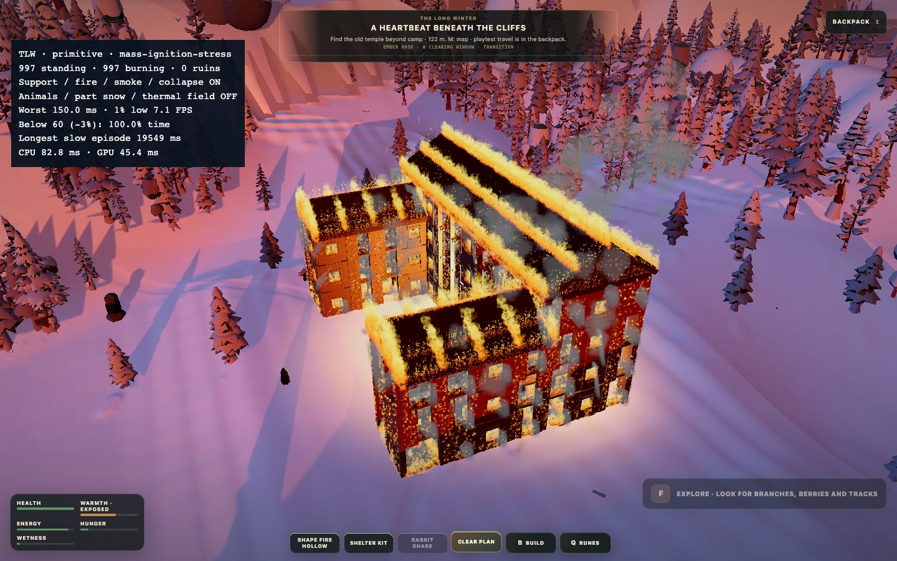
838 osaa pystyssä, 838 palaa, 102 rauniota. Simulaatioaika 101.6 s. Vaihenimi ei yksin tarkoita, että talo olisi kokonaan romahtanut.
Savutyöntekijöitä 8, virheitä 0, odottavia kyselyitä 3161. Sortumajono 125.
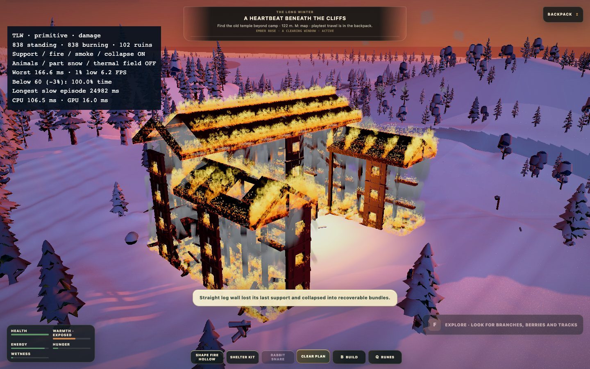
0 osaa pystyssä, 0 palaa, 755 rauniota. Simulaatioaika 154.4 s. Vaihenimi ei yksin tarkoita, että talo olisi kokonaan romahtanut.
Savutyöntekijöitä 8, virheitä 0, odottavia kyselyitä 1. Sortumajono 0.
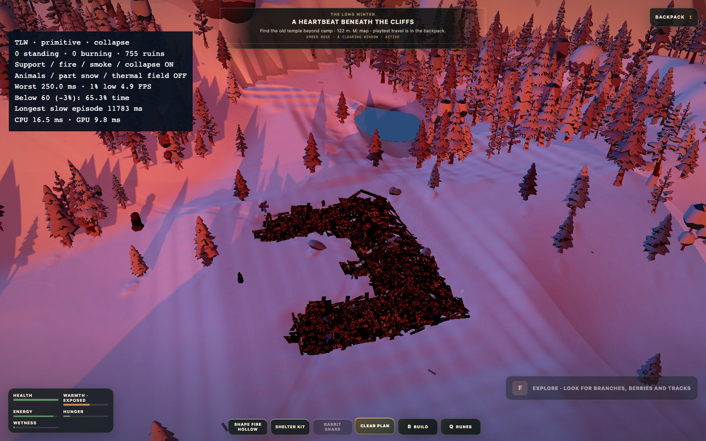
0 osaa pystyssä, 0 palaa, 755 rauniota. Simulaatioaika 165.3 s. Vaihenimi ei yksin tarkoita, että talo olisi kokonaan romahtanut.
Savutyöntekijöitä 8, virheitä 0, odottavia kyselyitä 4. Sortumajono 0.
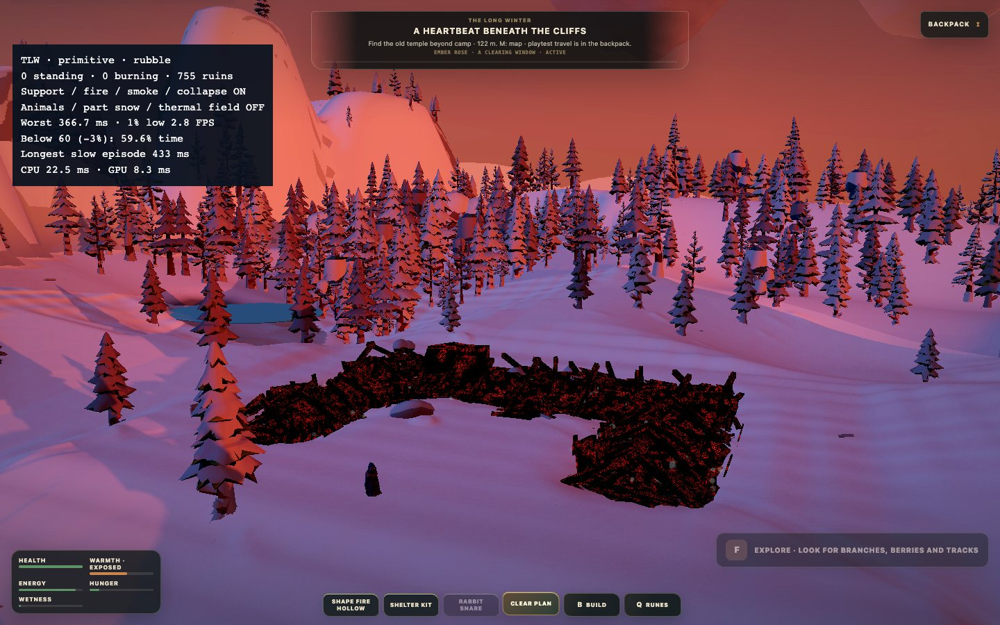